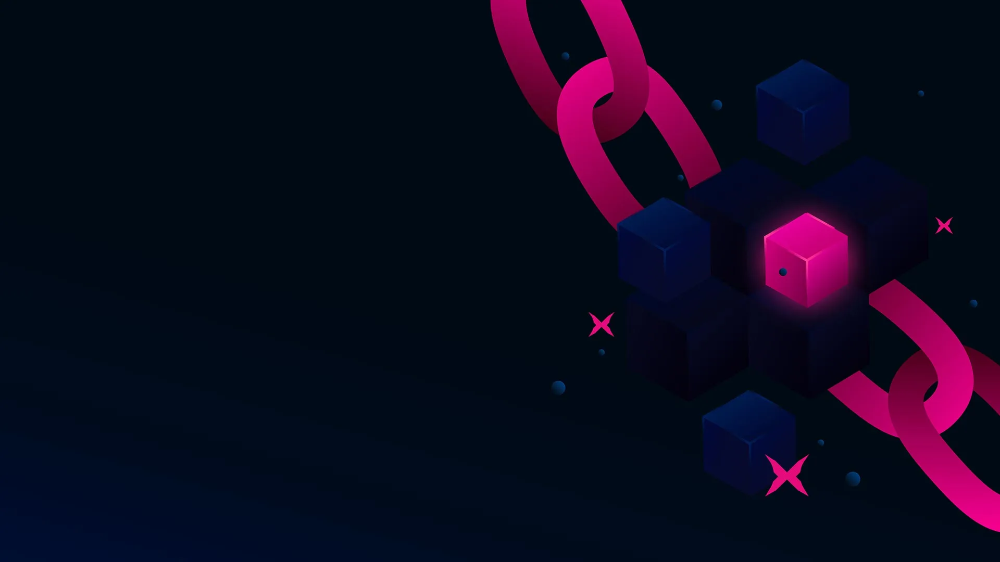

Web3 InfrastructureXode Staking
Stake your assets on Xode's secure platform and earn competitive rewards. Our staking service provides reliable infrastructure with high uptime and optimal returns for your investments.
Explore
Digital EcosystemExplore Xterium
Discover the complete Xterium ecosystem featuring decentralized applications, and innovative blockchain solutions designed for the future of Web3.
Explore